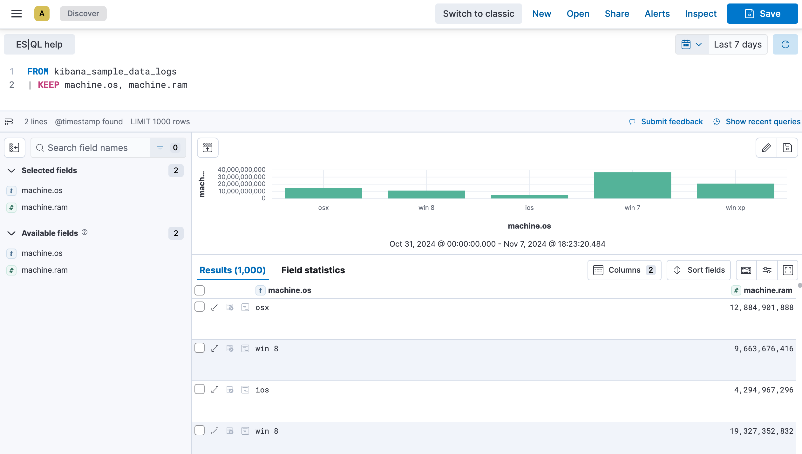
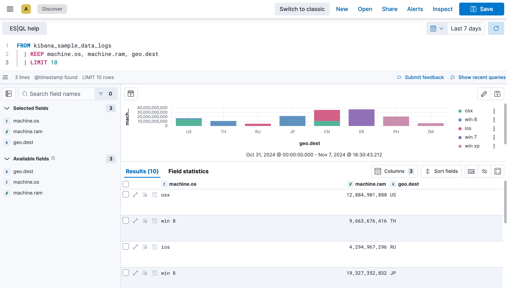
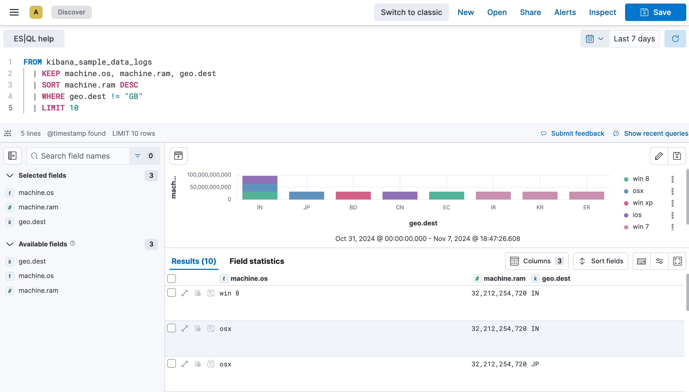

Using ES|QL
editThe Elasticsearch Query Language, ES|QL, makes it easier to explore your data without leaving Discover.
In this tutorial we’ll use the Kibana sample web logs in Discover and Lens to explore the data and create visualizations.
For the complete ES|QL documentation, including tutorials, examples and the full syntax reference, refer to the Elasticsearch documentation. For a more detailed overview of ES|QL in Kibana, refer to Use ES|QL in Kibana.
Prerequisite
editTo view the ES|QL option in Discover, the enableESQL setting must be enabled from Kibana’s Advanced Settings. It is enabled by default.
Use ES|QL
editTo load the sample data:
- On the home page, click Try sample data.
- Click Other sample data sets.
- On the Sample web logs card, click Add data.
- Open the main menu and select Discover.
- Select Try ES|QL from the application menu bar.
Let’s say we want to find out what operating system users have and how much RAM is on their machine.
- Set the time range to Last 7 days.
-
Copy the query below:
We’re specifically looking for data from the sample web logs we just installed.
We’re only keeping the
machine.osandmachine.ramfields in the results table.Put each processing command on a new line for better readability.
-
Click ▶Run.

ES|QL keywords are not case sensitive.
Let’s add geo.dest to our query, to find out the geographical destination of the visits, and limit the results.
-
Copy the query below:
FROM kibana_sample_data_logs | KEEP machine.os, machine.ram, geo.dest | LIMIT 10
-
Click ▶Run again. You can notice that the table is now limited to 10 results. The visualization also updated automatically based on the query, and broke down the data for you.
When you don’t specify any specific fields to retain using
KEEP, the visualization isn’t broken down automatically. Instead, an additional option appears above the visualization and lets you select a field manually.
We will now take it a step further to sort the data by machine ram and filter out the GB destination.
-
Copy the query below:
FROM kibana_sample_data_logs | KEEP machine.os, machine.ram, geo.dest | SORT machine.ram desc | WHERE geo.dest != "GB" | LIMIT 10
-
Click ▶Run again. The table and visualization no longer show results for which the
geo.destfield value is "GB", and the results are now sorted in descending order in the table based on themachine.ramfield.
- Click Save to save the query and visualization to a dashboard.
Edit the ES|QL visualization
editYou can make changes to the visualization by clicking the pencil icon. This opens additional settings that let you adjust the chart type, axes, breakdown, colors, and information displayed to your liking. If you’re not sure which route to go, check one of the suggestions available in the visualization editor.
If you’d like to keep the visualization and add it to a dashboard, you can save it using the floppy disk icon.
ES|QL and time series data
editBy default, ES|QL identifies time series data when an index contains a @timestamp field. This enables the time range selector and visualization options for your query.
If your index doesn’t have an explicit @timestamp field, but has a different time field, you can still enable the time range selector and visualization options by calling the ?_start and ?_tend parameters in your query.
For example, the eCommerce sample data set doesn’t have a @timestamp field, but has an order_date field.
By default, when querying this data set, time series capabilities aren’t active. No visualization is generated and the time picker is disabled.
FROM kibana_sample_data_ecommerce | KEEP customer_first_name, email, products._id.keyword
While still querying the same data set, by adding the ?_start and ?_tend parameters based on the order_date field, Discover enables times series capabilities.
FROM kibana_sample_data_ecommerce | WHERE order_date >= ?_tstart and order_date <= ?_tend